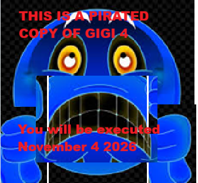
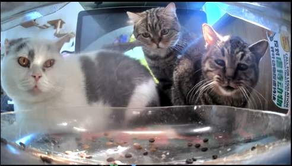
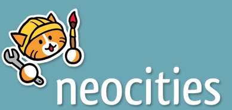
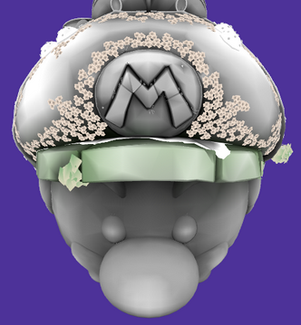
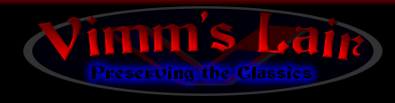

Click on the GiGi to go to a random old website...

The main source is from this and theres also a .me version of the website but idk which one was there first and I just assume one might be the alternate of the other. It just checks for websites without JS code. and goes to a random one. Pretty rad imo
Cat Camera thing
A lovely little website where you can see cats chilling at various feeders. Mostly ones in China or maybe other East-Asian countries. Just click on the Cat Counsel to check it out. I would recommend going to the feeders with hungry cats section.

Neocities
This is where this site will one day end up. It's an open-source free web hosting network. It hosts more than a million websites and is really a lovely piece of the old internet, sparked anew. It's where alot of the inspiration for some of the general vibe for this website would be. I'll warn you in advance that if u click on the websites button there might be some gyulp NSFW websites. Not like super bad but just like eh prolly shouldn't be clicking on at work or whatever. Most of the sites are pretty much normal though.

No clip website
Allows you to noclip through a bunch of old maps from consoles. Useful for 3d artwork or just fun to mess around with in case you want to do anything but work.

Vimm's Lair
Ah last but not least by any means. Vimm's Lair. I know not everyone is a fan of game emulation or... gyeeeeullp pirating. But this website has everything from Atari 2600 games to the PSP emulators and ROM's for games all put into one nice and neat website.
